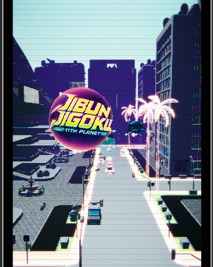

Pilota tu MECHA de doble empuñadura en este ARCADE RAIL SHOOTER. DODGE, SHOOT, PARRY. Sobrevive a oleadas de drones enemigos mientras gestionas calor, munición, armadura y mejoras en una carrera contrarreloj de 2:30 hacia el jefe final: el Command Overlord Core.